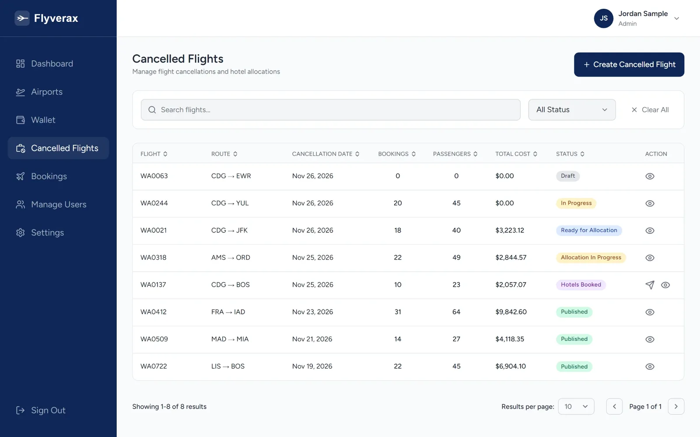
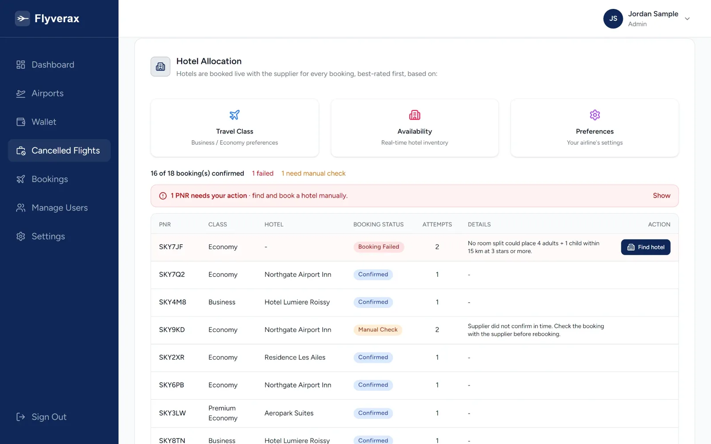

Hotel accommodation for cancelled flights
When a flight is cancelled, Flyverax finds and books hotel rooms near the airport for your passengers, from a single passenger list. Your team stays in control, and every passenger gets their hotel by SMS and email.

How it works
Add the flight and upload your bookings as a CSV file. Rows with problems are kept aside for you to fix, not lost.
Live availability and rates from our hotel partners. If nearby hotels are full, the search widens.
Each booking is matched to a room that fits its travel class, party size and needs. Anything that cannot be placed is flagged for your team.
Each passenger gets their hotel confirmation by SMS and email, and your finance team gets one invoice for the whole flight.

Request a demo
Tell us a little about your airline. We will show you the full flow, from cancelled flight to confirmed rooms, and answer your team's questions.
Flyverax is built by Sysverax, a product-first technology company building secure, scalable and maintainable software and hardware systems.